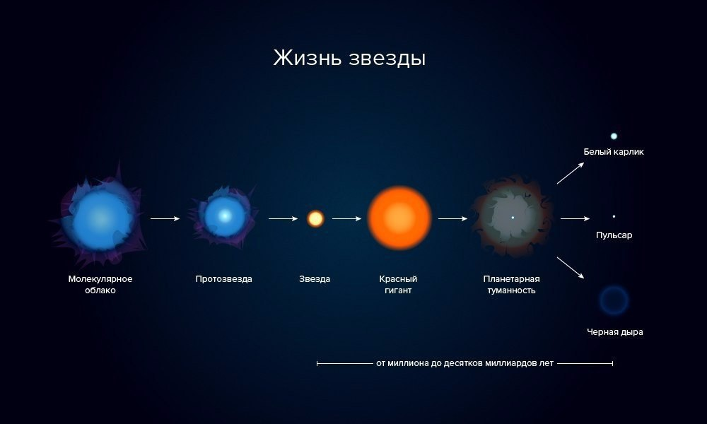
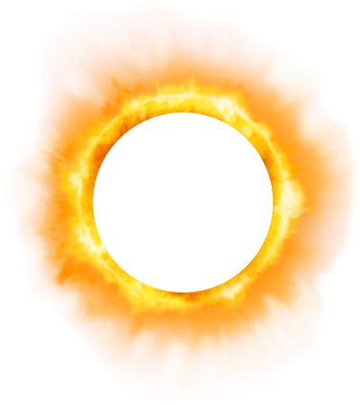
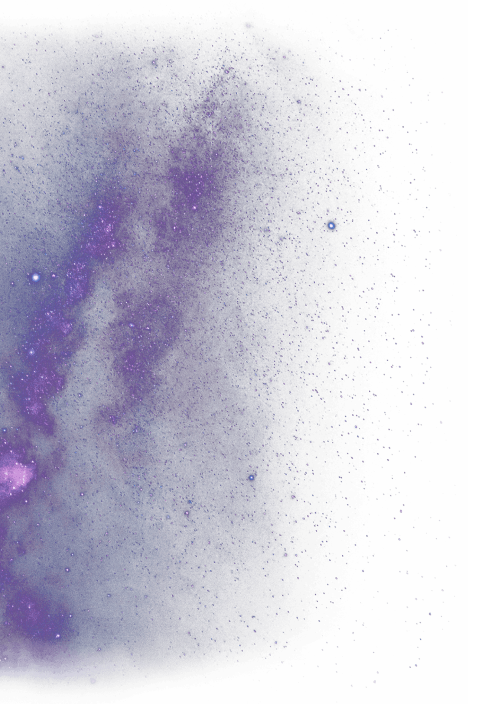
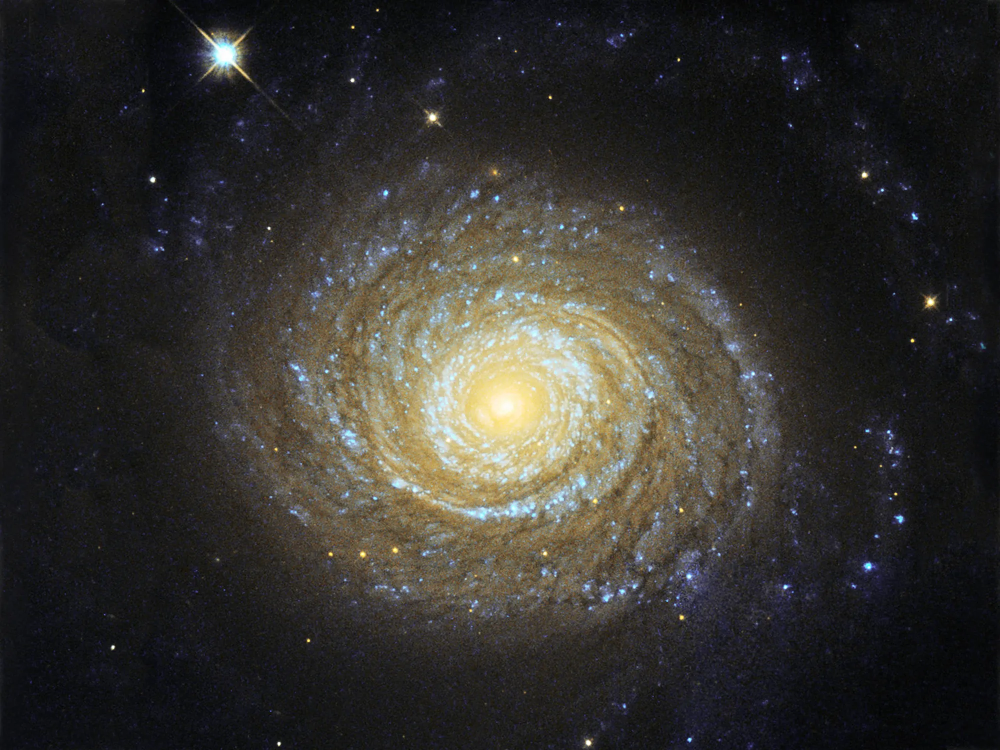
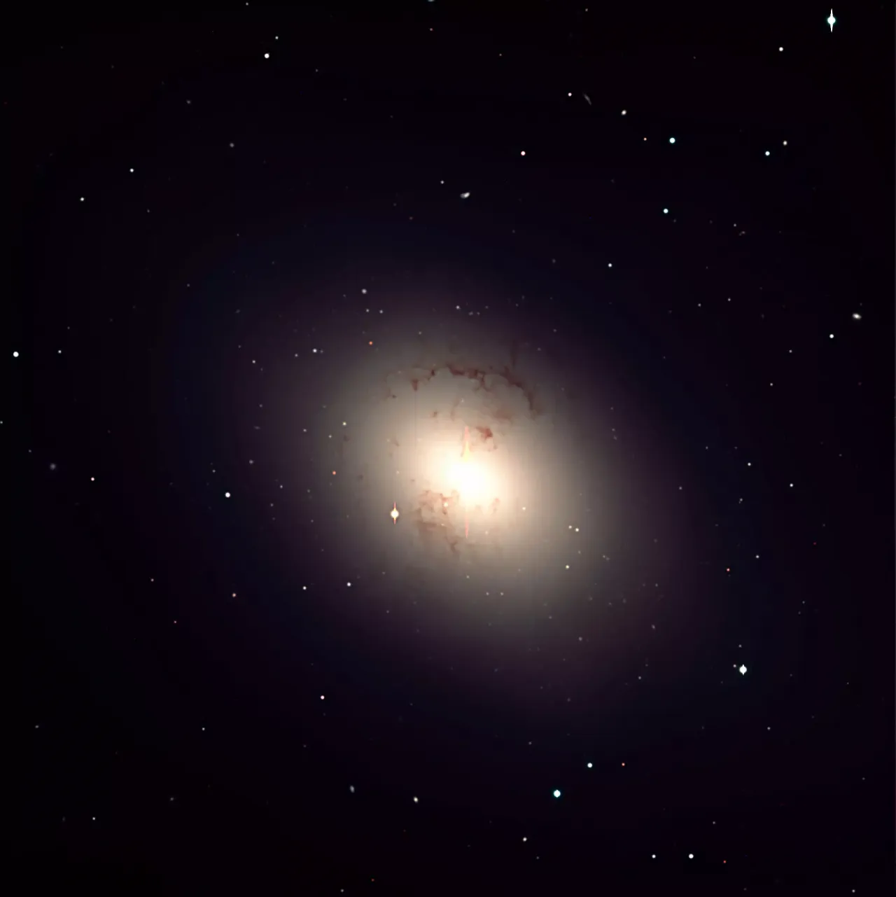
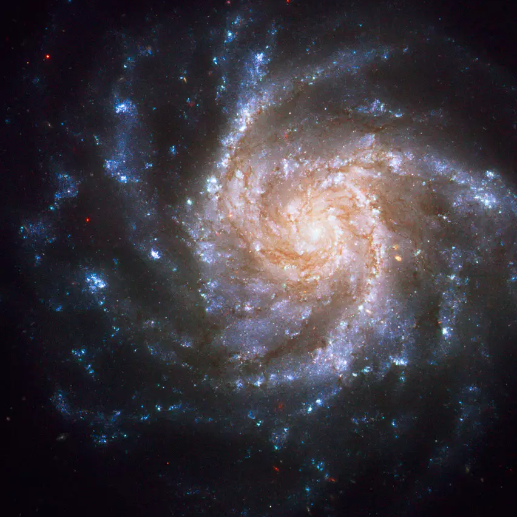
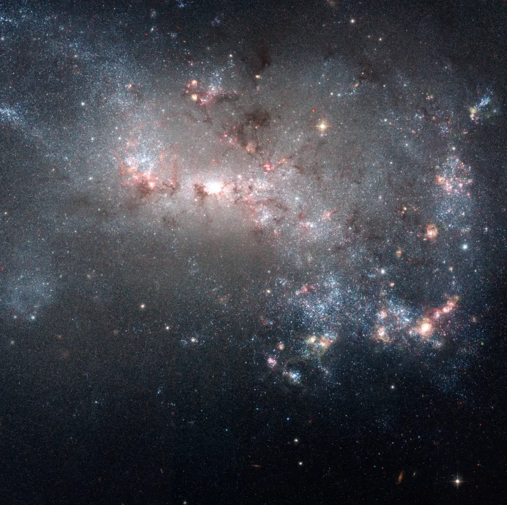

Звёзды
Звёзды - это гигантские самосветящиеся плазменные (газовые) шары. Раскрыть природу звёзд помогли физические методы исследования и знание общих законов природы, действующих как в земных, так и в космических условиях. Основной источник информации о звёздах – наблюдения во всех доступных диапазонах длин волн электромагнитного излучения, в том числе с космических аппаратов. Анализ звёздных спектров даёт сведения о состоянии внешних слоёв звёзд – их атмосфер.
В звёздах сосредоточена основная масса видимого вещества галактик, также они являются мощными источниками энергии. Вещество звезды представляет собой частично или полностью (в центре звезды) ионизованную плазму. На поздних стадиях эволюции звёзд вещество звёздных недр переходит в состояние вырожденного газа (в вырожденных звёздах) или нейтронного вещества (в нейтронных звёздах).
Эволюция звёзд
Эволюция звёзд в астрономии — изменение со временем физических и наблюдаемых параметров звезды из-за идущих в ней термоядерных реакций, излучения ею энергии и потери массы. Часто говорят об эволюции как о «жизни звезды», начинающейся когда единственным источником энергии звезды становятся ядерные реакции, и заканчивающейся когда реакции прекращаются — у различных звёзд эволюция идет по-разному. Согласно астрофизическим моделям, срок жизни звезды, в зависимости от начальной массы, продолжается от нескольких миллионов до десятков триллионов лет, поэтому астрономы прямо наблюдают только очень малый по сравнению с продолжительностью жизни звезды период её эволюции, на протяжении которого эволюционные изменения практически незаметны.

Термоядерные реакции внутри звёзд
В звёздах на разных стадиях эволюции проходят различные термоядерные реакции.
Так, в недрах звёзд главной последовательности синтезируются ядра гелия из ядер водорода (протонов). В массивных звёздах на более поздних этапах эволюции синтезируются более тяжёлые элементы: сначала углерод в тройном гелиевом процессе, а в самых тяжёлых звёздах синтезируются и более тяжёлые элементы вплоть до железа — дальнейший нуклеосинтез более тяжёлых элементов не идёт, так как энергетически невыгоден.
Элементы тяжелее железа также образуются в звёздах, но не когда они находятся на главной последовательности, а при особых обстоятельствах: например, при взрывах сверхновых, когда выделяется большое количество энергии — при так называемом взрывном нуклеосинтезе.
Все реакции проходят засчёт давления и высокой температуры.



Туманности
Место рождения новых звёзд
Эволюция или рождение звезды начинается в гигантском молекулярном облаке, туманности, также иногда образно называемом «звёздной колыбелью».
При развитии гравитационной неустойчивости облако может начать сжиматься. Неустойчивость может быть вызвана различными факторами, например, столкновением двух облаков, прохождением облака через плотный рукав спиральной галактики или же взрывом сверхновой звезды на достаточно близком расстоянии, ударная волна от которой, распространяющаяся по межзвездному газу, может столкнуться с молекулярным облаком.
Кроме того, при столкновениях галактик столкновения газовых облаков, связанных с галактиками, начинают происходить чаще, что объясняет увеличение темпа звездообразования при столкновениях галактик.
Стадия протозвезды
Сжатие облака происходит неравномерно, и через некоторое время после начала сжатия в облаке формируется гидростатически равновесное ядро — обычно считается, что с этого момента ядро облака является протозвездой.
Далее аккреция внешних слоёв облака на ядро приводит к росту его массы и температуры. Аккреция - это процесс приращения массы небесного тела путём гравитационного притяжения материи на него из окружающего пространства.
Чёрные дыры
Чёрные дыры, общее название сколлапсировавших объектов, не имеющих материальной поверхности; их границей является горизонт событий.
Гравитационный коллапс, гидродинамическое сжатие космического объекта под действием собственных сил тяготения, приводящее к значительному уменьшению его размеров. Для развития гравитационного коллапса необходимо, чтобы силы давления (отталкивания) отсутствовали вообще или, по крайней мере, были недостаточны для противодействия силам гравитации.
Гравитационное взаимодействие элементарных частиц, наиболее слабое из всех известных фундаментальных взаимодействий, характеризуемое участием гравитационного поля (поля тяготения). По современным представлениям, любое взаимодействие частиц осуществляется путём обмена между ними виртуальными (или реальными) частицами – переносчиками взаимодействия. В электромагнитном, слабом и сильном взаимодействиях переносчиками являются фотон, промежуточные векторные бозоны и глюоны соответственно.
Важнейшее свойство гравитационного поля состоит в том, что оно определяет геометрию пространства-времени, в котором движется материя. Геометрия мира не может быть задана изначально и изменяется при движении материи, создающей гравитационное поле (см. Тяготение).
Гравитационный коллапс возникает на двух крайних стадиях эволюции звёзд. Во-первых, рождение звезды начинается с гравитационного коллапса газово-пылевого облака. Во-вторых, некоторые звёзды заканчивают свою эволюцию посредством гравитационного коллапса, их центральная часть (ядро) переходит при этом в конечное состояние нейтронной звезды или чёрной дыры. Одновременно разреженная оболочка может быть выброшена сильной ударной волной, что приводит к вспышке сверхновой звезды.
Горизонт событий (в теории чёрных дыр), граница области пространства-времени, в которой сигналы, распространяющиеся со скоростью света, полностью удерживаются тяготением и не могут уйти на бесконечность во внешнее пространство. Горизонт событий является границей чёрной дыры. Если чёрная дыра не вращается (чёрная дыра Шварцшильда или чёрная дыра Райсснера – Нордстрёма), то горизонт событий совпадает со сферой Шварцшильда – сферой с радиусом, равным гравитационному радиусу
r
g
=2GM/c
2
, где
M
– масса чёрной дыры,
G
– гравитационная постоянная, c – скорость света в вакууме. Вращение чёрной дыры (чёрная дыра Керра или чёрная дыра Керра – Ньюмана) деформирует горизонт событий, однако по порядку величины его размеры остаются теми же.
Общая теория относительности
Прямого наблюдательного подтверждения существования чёрных дыр как объектов с горизонтом событий нет. Однако существует ряд астрономических объектов, свойства которых наилучшим образом объясняются в рамках гипотезы о присутствии в них чёрной дыры. Кроме того, общая теория относительности (ОТО), а также ряд расширенных и альтернативных теорий гравитации предсказывают неизбежность формирования чёрных дыр при определённых реалистичных условиях. В разных теориях гравитации (например, в теории струн, в петлевой квантовой гравитации) свойства чёрных дыр, в частности их внутреннее строение, могут различаться. Наиболее распространённым является описание чёрных дыр в рамках ОТО.
Согласно ОТО, внутри чёрных дыр существует сингулярность, в которой кривизна пространства-времени и плотность материи формально достигают бесконечного значения. В случае невращающейся чёрной дыры сингулярность является точкой в её центре; попавшее в чёрную дыру вещество оказывается в сингулярности. В случае вращающихся чёрных дыр сингулярность имеет структуру бесконечно тонкого кольца и при некоторых условиях частицы могут избежать попадания в неё. Структура пространства-времени во вращающихся чёрных дырах гораздо более сложная, в частности образуется второй горизонт событий.
Галактики
Галактики (внегалактические туманности, внешние галактики), гигантские звёздные системы, находящиеся за пределами нашей Галактики.
Эволюция галактик

Эволюция галактик — процесс формирования галактик, а также изменения со временем их параметров: формы, размеров, химического состава и звёздного населения. Формирование галактик началось 12—13 миллиардов лет назад, и хотя эволюция у каждой галактики идёт по-своему, известно множество общих механизмов, которые могут повлиять на эволюцию каждой галактики. Это могут быть бурные процессы, такие, как слияния галактик, а может быть, например, постепенно идущее звездообразование, при котором расходуется галактический газ и увеличивается металличность галактики. Для удобства выделяют три вида эволюции: динамическую, спектрофотометрическую и химическую, которые чаще всего рассматриваются по отдельности, как и механизмы, их порождающие.
Галактики формируются из газопылевых облаков при возникновении гравитационной неустойчивости. Возникающее в какой-либо части материи Вселенной уплотнение становится причиной взаимного тяготения частиц, образования гравитационной неустойчивости и сжатию протогалактического облака. Этот процесс подобен тем, которые идут при формировании звёзд, но на больших масштабах. Затем газ остывает, коллапсирующие области фрагментируются, в результате чего начинается звездообразование.
Классификация и строение галактик
Многообразие наблюдаемых форм галактик потребовало разработки их классификации. Все галактики были разделены на три типа: эллиптические, спиральные и неправильные (иррегулярные).

эллиптическая галактика
Эллиптические галактики, тип галактик, имеющих форму, близкую к сферической или эллипсоидальной. Поверхностная яркость галактик плавно уменьшается с расстоянием от центра – от плотного сгущения звёзд в центре до разреженных внешних областей.
Массы эллиптических галактик лежат в очень широких пределах: от сотен миллиардов масс Солнца у гигантских эллиптических галактик до несколько миллионов масс Солнца у самых маленьких карликовых галактик.
Большинство эллиптических галактик состоит из очень старых звёзд с массой, не превышающей массу Солнца, возраст которых составляет не менее 10 млрд лет. Среди этих звёзд много красных гигантов, что объясняет красноватый цвет массивных галактик. Помимо отдельных звёзд, эллиптические галактики содержат также шаровые звёздные скопления из сотен тысяч звёзд. В среднем чем выше масса галактики, тем больше в ней шаровых скоплений.
По-видимому, в центре всех эллиптических галактик высокой светимости содержатся сверхмассивные чёрные дыры. Массы этих чёрных дыр в наиболее массивных галактиках достигают значений в несколько миллиардов масс Солнца. Попадание газа в окрестность чёрных дыр стимулирует активность ядер галактик, и они превращаются в мощные источники энергии. В некоторых массивных эллиптических галактиках активность ядра сопровождается ускорением и выбросом из центра потоков заряженных частиц, что делает их мощными источниками радиоизлучения (радиогалактики).

спиральная галактика
Спиральные галактики, тип галактик, на изображении которых хорошо заметны спиральные ветви.
Спиральные ветви галактик представляют собой области повышенной концентрации межзвёздной среды (молекулярного и атомарного газа, а также связанной с газом пыли), молодых звёзд и, в меньшей степени, старых звёзд галактического диска. Уплотнение газа в ветвях приводит к появлению очагов звездообразования, поэтому ветви, как правило, выделяются на фоне диска главным образом благодаря присутствию в них недавно родившихся звёзд и областей ионизованного водорода, связанных с наиболее горячими звёздами.
Основные структурные составляющие спиральных галактик: звёздно-газовый диск со спиральными ветвями, центральное сгущение звёзд – балдж, и протяжённое гало, содержащее звёзды, разреженный горячий газ и тёмную материю.
Происхождение спиральной структуры галактик представляет собой сложный и до конца не решённый вопрос. Различают несколько типов спиральных ветвей разного происхождения.
Упорядоченный спиральный узор с длинными симметричными спиральными ветвями имеет в большинстве случаев волновую природу и связан с распространением волн сжатия в звёздно-газовом диске.
Также источником возмущений, рождающих спиральные волны плотности, могут быть как гравитационные или газодинамические неустойчивости диска, так и внешнее гравитационное воздействие на диск, например, со стороны близкой соседней галактики. Во всех случаях холодный газ, концентрирующийся вблизи плоскости звёздного диска в спиральных галактиках, играет большую роль в формировании спирального узора. В галактиках, где такого газа очень мало, спиральные ветви либо слабоконтрастны, либо отсутствуют (линзовидные галактики).

неправильная галактика
Неправильные галактики, тип галактик, для которых характерна неправильная форма, отсутствие регулярной структуры. На оптических фотографиях часто трудно определить положение центра неправильной галактики.
В отличие от спиральных галактик, в неправильных галактиках не наблюдается ни яркого центрального звёздного сгущения (балджа), ни чётко выраженных спиральных ветвей. Однако, как и спиральные галактики, неправильные галактики содержат звёзды разных возрастов и межзвёздный газ и относятся к дисковым системам, поскольку основное количество звёзд и межзвёздной среды в них образует вращающийся «пухлый» звёздно-газовый диск. Он состоит преимущественно из старых звёзд (хотя могут быть звёзды всех возрастов) и имеет более симметричную форму, чем сама галактика, наблюдаемая в оптическом диапазоне спектра. Бесструктурный вид этим галактикам придаёт не характер распределения вещества в них, а хаотичное расположение в галактическом диске группировок молодых звёзд и связанных с ними светящихся облаков ионизованного газа.
Свойства неправильных галактик очень разнообразны: их массы, размеры, поверхностные яркости, темпы звездообразования варьируются в широких пределах. Характерная особенность неправильных галактик – сравнительно высокое содержание межзвёздного газа (нередко более 50 % от суммарной массы звёзд) и наличие локальных обширных областей активного звездообразования, которые выделяются высокой яркостью и голубоватым цветом из-за присутствия в них горячих звёзд – голубых сверхгигантов.
Неправильные галактики могут иметь различное происхождение. Многие из них, по-видимому, возникли как самостоятельные звёздные системы более 10 млрд лет назад, но их эволюция протекала сравнительно медленно, и они сохранили большие запасы межзвёздного газа до современной эпохи. Некоторые неправильные галактики могли появиться как результат частичного разрушения спиральных галактик при гравитационном взаимодействии с близкими галактиками большой массы.